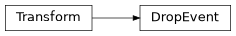
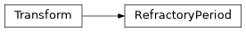

evutils.transforms#
Data augmentation transforms for events.
torchvision/tonic-style transformations for event streams: random and deterministic operations for augmenting data during training (drops, spatial flips, jitter, time skew, refractory filtering, …).
Each transform pairs a Numba-JIT functional kernel (dispatched over both
plain structured arrays and EventArray) with a
composable Transform class. Compose unwraps/rewraps events
only once around each contiguous block of JIT transforms.
Submodules#
Attributes#
Classes#
Composes several transforms together. |
|
Base class for all evutils transforms. |
|
Randomly drops each event with probability |
|
Drops every event inside one randomly-placed time window. |
|
Flips events horizontally ( |
|
Adds correlated Gaussian noise to event coordinates. |
|
Rescales timestamps by an affine map |
|
Shifts timestamps so the earliest event lands at |
|
Adds Gaussian noise to each timestamp. |
|
Enforces a per-pixel refractory period. |
Package Contents#
- class evutils.transforms.Compose(transforms: Iterable[Callable])[source]#
Composes several transforms together.
Groups contiguous blocks of evutils Transform objects to execute them purely in C-space via Numba JIT without intermediate unpacking/repacking overhead. Freely accepts standard Callables (e.g. PyTorch/Tonic transforms).
- Parameters:
transforms (Iterable[Callable])
- transforms#
- class evutils.transforms.Transform[source]#
Base class for all evutils transforms.
Transforms should implement the _forward_jit method to allow zero-overhead composition inside a Compose pipeline.
- bind_context(events)[source]#
Capture per-call context (currently
sensor_size) fromevents.Called by
__call__()and byComposebefore_forward_jitso a transform can fall back to the container’ssensor_sizemetadata when it was not given one explicitly. Stored transiently, not persisted.
- class evutils.transforms.DropEvent(p: float | tuple = 0.1, seed: int | None = None)[source]#
Bases:
Transform
Randomly drops each event with probability
p.Tonic-compatible replacement for
DropRandomEvents(kept as an alias). Uses an independent Bernoulli mask per event, so the number dropped is binomially distributed aroundp * nrather than exactlyp * n.- Parameters:
p (float or tuple of float, optional) – Drop probability in
[0, 1). A(lo, hi)tuple is sampled uniformly per call. Defaults to0.1.seed (int | None)
- p = 0.1#
- seed = None#
- evutils.transforms.DropRandomEvents#
- class evutils.transforms.DropEventByTime(duration_ratio: float | tuple = 0.2, seed: int | None = None)[source]#
Bases:
TransformDrops every event inside one randomly-placed time window.
- Parameters:
duration_ratio (float or tuple of float, optional) – Window length as a fraction of the recording span, in
[0, 1). A(lo, hi)tuple is sampled uniformly per call. Defaults to0.2.seed (int | None)
- duration_ratio = 0.2#
- seed = None#
- class evutils.transforms.RandomFlipLR(sensor_size: tuple = None, p: float = 0.5)[source]#
Bases:
TransformFlips events horizontally (
x' = width - 1 - x) with probabilityp.- Parameters:
sensor_size (tuple, optional) –
(W, H)(or(W, H, P)) sensor size; only the widthWis used. If omitted, it is taken from the events’sensor_sizemetadata.p (float, optional) – Probability of performing the flip. Defaults to
0.5.
- sensor_size = None#
- p = 0.5#
- class evutils.transforms.SpatialJitter(sensor_size: tuple = None, var_x: float = 1.0, var_y: float = 1.0, sigma_xy: float = 0.0, clip_outliers: bool = False)[source]#
Bases:
TransformAdds correlated Gaussian noise to event coordinates.
- Parameters:
sensor_size (tuple, optional) –
(W, H)(or(W, H, P)) sensor size, used for clipping. Only needed whenclip_outliersis True; if omitted, taken from the events’sensor_sizemetadata.var_x (float, optional) – Variances of the jitter in x and y. Default
1.0.var_y (float, optional) – Variances of the jitter in x and y. Default
1.0.sigma_xy (float, optional) – Off-diagonal covariance. Default
0.0.clip_outliers (bool, optional) – Drop events jittered outside the sensor. Default
False.
- sensor_size = None#
- var_x = 1.0#
- var_y = 1.0#
- sigma_xy = 0.0#
- clip_outliers = False#
- class evutils.transforms.TimeSkew(coefficient: float | tuple, offset: float | tuple = 0)[source]#
Bases:
TransformRescales timestamps by an affine map
t' = t * coefficient + offset.- Parameters:
coefficient (float or tuple of float) – Multiplier applied to every timestamp. A
(lo, hi)tuple is sampled uniformly per call.offset (float or tuple of float, optional) – Added after multiplication. Default
0.
- coefficient#
- offset = 0#
- class evutils.transforms.TimeNormalize(start_ts: int = 0)[source]#
Bases:
TransformShifts timestamps so the earliest event lands at
start_ts.Stateless: each call normalizes the batch it is given on its own. For a chunk-by-chunk stream use
EventReader(normalize_ts=True), which latches the offset from the first chunk across the whole stream; dropping this transform into aComposeover sequential chunks would instead reset each chunk tostart_tsindependently.- Parameters:
start_ts (int, optional) – Timestamp assigned to the earliest event. Default
0.
- start_ts = 0#
- class evutils.transforms.TimeJitter(std: float, clip_negative: bool = True, sort_timestamps: bool = False)[source]#
Bases:
TransformAdds Gaussian noise to each timestamp.
- Parameters:
std (float) – Standard deviation of the timestamp noise.
clip_negative (bool, optional) – Drop events with negative jittered timestamps. Default
True.sort_timestamps (bool, optional) – Re-sort by timestamp after jittering. Default
False.
- std#
- clip_negative = True#
- sort_timestamps = False#
- class evutils.transforms.RefractoryPeriod(delta: int | tuple)[source]#
Bases:
Transform
Enforces a per-pixel refractory period.
- Parameters:
delta (int or tuple of int) – Refractory period in timestamp units. A
(lo, hi)tuple is sampled uniformly per call. Events must be sorted by timestamp.
- delta#